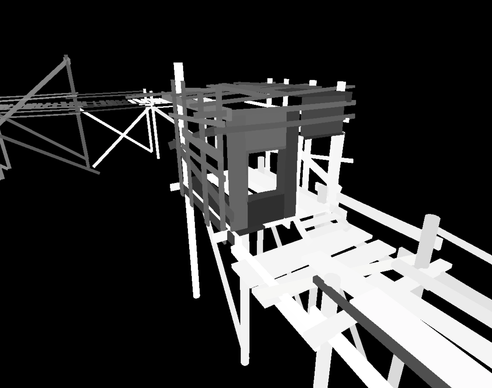
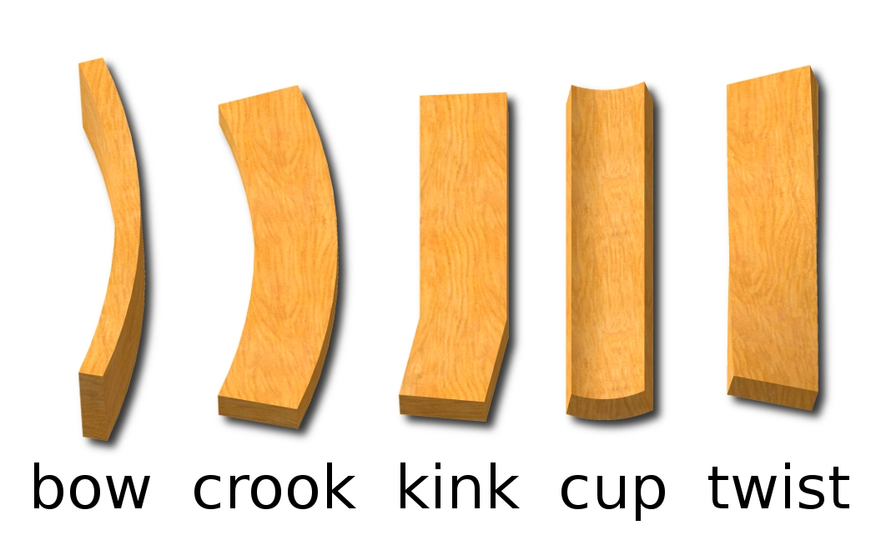
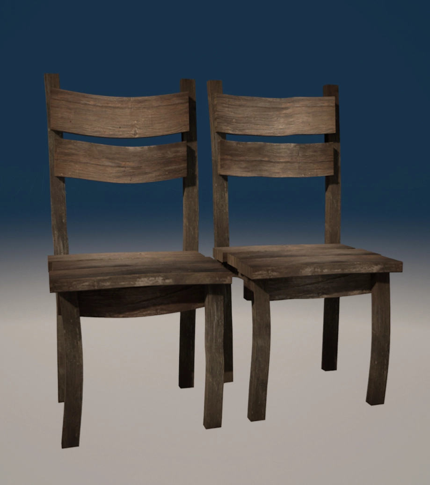

02/10/24 : Perfect Planks
Intro
I really like chaotic, messy architecture however in the past I've found that it can be difficult to approach scenes like this with traditional modular building techniques. Often I've ended up making large sections of planks for example out of engine which can then become difficult to change later and are not very easy to reuse multiple times, alternatively if smaller pieces are used environments can often look repetitive. I though that perhaps if more of the construction could be moved into the engine and then variation added procedurally it would allow for these types of scenes to look more realistic and be developed more quickly.
The main inspiration for this idea comes from a talk about Building Obductions Art Tools in particular stretchables meshes. Essentially the idea is that by tiling the texture uvs with the scale of an object uv density can be preserved and the mesh can look like it was unwrapped for that specific size. The setup is pretty easy, just a standard cube mesh with trim style uvs a tiling texture and then a basic material setup using the objects scale.
Trim Style UVS
Basic Node Setup

With just that you can already start constructing scenes, these only took a few minutes and are really fun to build because you don't have to think about uvs or modular pieces and can just focus on how things would be constructed and how different pieces would connect. Often in a wood kit you might have to have multiple wooden wall sections of different sizes to fit an area, but here it can be scaled without issue. This would probably be good enough for most environments, but if used heavily it can start to look a little repetitive so to get the perfect planks variation is needed.
Variation
Random value from position node setup
To achieve variation we need some way of getting a random value for each plank, the original Obduction talk uses a technique where the position axes are combined however that can often result in larger artifacts where close planks can have a similar value.
Random value from position example
However in my view it's not worth the performance benefit over just using some noise either generated or from a texture, this results in a far more even distribution of values.
Nicely distrubuted random values
Ideally this random value would already be something that the engine provides but in Unreal it does so only for instanced meshes made with foliage tools or on an instance blueprint component. In recent versions you can work around this by putting your entire level in a level instance but if there's some other nicer way of working around this I'd be happy to hear it.
Now that we have a random value per plank theres a lot that can be done with it, by using the value as a mix parameter in a lerp it can control the blending with a color or even an alternate wood texture.
Color Variation
Adding a random offset to the uvs of each plank is now trivial so planks that are stacked next to each other don’t have obviously duplicate textures this isn’t a particularly good example but on textures with higher contrast this is much more noticeable.
No UV Variation
UV Variation
The shape of the planks can be varied aswell of course, by sampling some noise along the length of the plank and then using that to offset vertices left or right based on an intensity value a warped appearance can be achieved.
However it can be quite annoying to edit because the whole plank will wobble around when moved making it difficult to line up precisely so I just made a gradient using the local position where both the start and end were a 0 value and multiplied it by the random offset, that way only the vertices in the middle get moved.
Gradient Mask

You can tweak the scale of the noise and the intensity in the shader instance, obviously more subdivisions are gonna give a smoother bend. I found that just displacing it left and right was enough to create good looking variation, but you could get easily get as complicated as you want with implementing different types of wood bends.
Different types of wood bends
This is more of a minor side note but a problem with the warping setup is that the bigger the mesh gets the more warped it’s gonna be, which is kind of the opposite of what you want to happen like realisticly the smaller sticks should be bending the most. To fix this you can do a little hack and remap the y scale so that past a certain size planks are no longer warped.

More
Putting gradients on anything makes it look better I don’t really know why, maybe because it fakes like occlusion or dirt or something but dishonored does it all the time and you can just use the same gradient from the bending stuff so I put that on top of the texture and it adds a lot.
Putting the origin on one side of the plank rather than in the center makes it way easier to use because then you can put it on one side of a gap and scale to fit.

And from there you can sort of add on the normal techniques to break up repetition like vertex painting to add painted, burnt or moldy areas.

Aswell as blending based on the world normal to have dirt, dust etc only on the tops of planks, I didn't actually end up doing that because I think it looks kind of bad on flat surfaces, but maybe if you used the normal of the texture aswell it could look more convincing.
Future
This is mainly just a list for myself of things that might be worth looking into in the future to make this technique even more useful / realistic.
Bevelled edges
It would be good to find a proper solution for how to keep the bevelled edges from being distorted at large scaling factors, perhaps this could be done purely through a normal texture instead using something like ultimate trims or maybe a vertex mask that holds vertices at a certain offset whilst still allowing them to scale.

Bevels get stretched at large scales :(
End caps
You could easily just use a different material so that the ends have a seperate texture but I think theres probably a nicer way of doing it that would allow for a soft transition aswell.
Damage Decals
I’ve seen some cheap ways of scattering decals all within the material, texture bombing etc so I think it would be possible to add some randomized scratches or dents over top to add more detail.
Bolts
I feel like it might become too expensive to use a similar technique for bolts and nails, so perhaps some way of procedurally adding bolts?
Result
That's about it, creating scenes with dynamic objects like these can be a little weird to get used to because the planks constantly change when they're being moved around (another thing having consistent object random values would fix), but just being able to fix intersections between pieces or add new stuff easily is really nice.
Another less obvious impact of this type of construction is that if you create one object like a chair and then save it as a prefab, blueprint etc then anytime you make a new chair that chair will be completely different to any others in the level.
I haven't looked into it too much performance wise but to me there's no obvious reason why an engine shouldn't be able to handle lots of instances of the same mesh like this, infact it might even be better than if they were constructed as one whole section because it could be more efficently culled, but this would definitely depend on how the engine was setup.